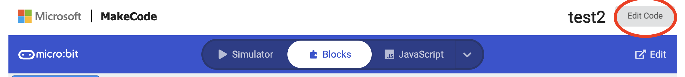
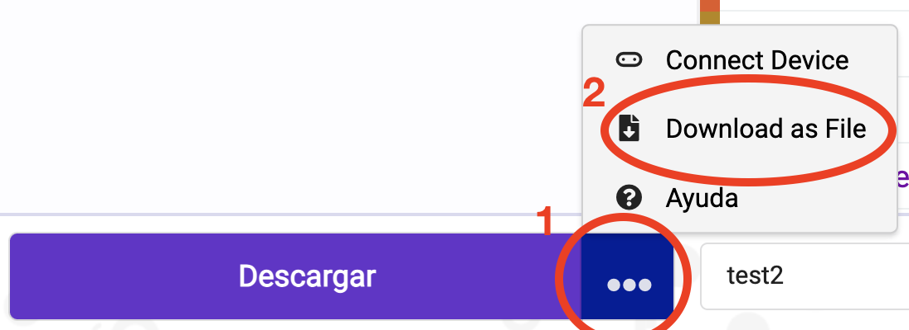
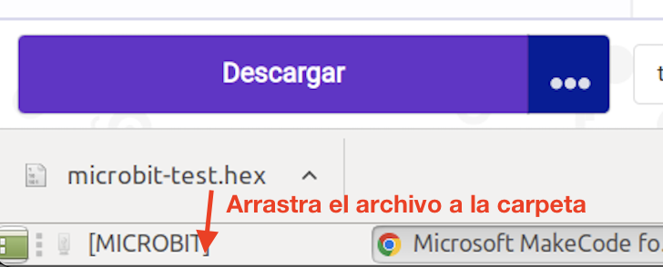

Ha llegado el momento de programar tu placa real y probar las prácticas que has hecho con una MIcro:bit real. Para pasar los programas que has escrito en las tareas anteriores a la placa real tendrás que seguir los siguientes pasos:
- Conecta tu placa MIcro:bit a cualquier puerto USB del ordenador de clase con el cable que tienes en su caja.
- Aparecerá una nueva unidad llamada MICROBIT (dentro hay dos archivos, pero no tienes que hacer nada con ellos). Si no se abre automáticamente la ventana de MICROBIT, puedes encontrarla en el menú Lugares.
- Abre en el navegador la tarea que vayas a usar. Puedes hacerlo pulsando el enlace correspondiente en la tarea de Classroom.
- Pulsa en el botón "Edit code" (editar el código) que tienes arriba a la derecha:

- Con esto entrarás en el editor de código. Pulsa ahora los tres puntos que tiene el botón "Descargar" que tienes abajo a la izquierda y selecciona "Download as File" en el menú que aparece.

- Se descargará un archivo con el nombre de tu proyecto y extensión ".hex", que contiene el código para tu placa Micro:bit. Para pasarlo a la placa, solo tienes que pasar ese archivo a la carpeta MICROBIT. Puedes copiarlo desde la carpeta de Descargas a la carpeta MICROBIT, pero lo más sencillo es arrastrarlo desde la barra inferior del navegador, como te muestro en esta imagen:

- A partir de ese momento, la placa Miro:bit está programada y empezará a ejecutar el código inmediatamente.